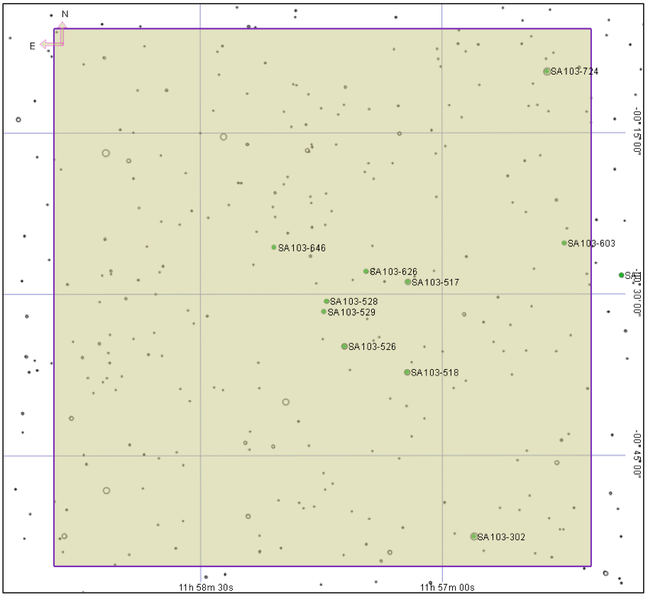
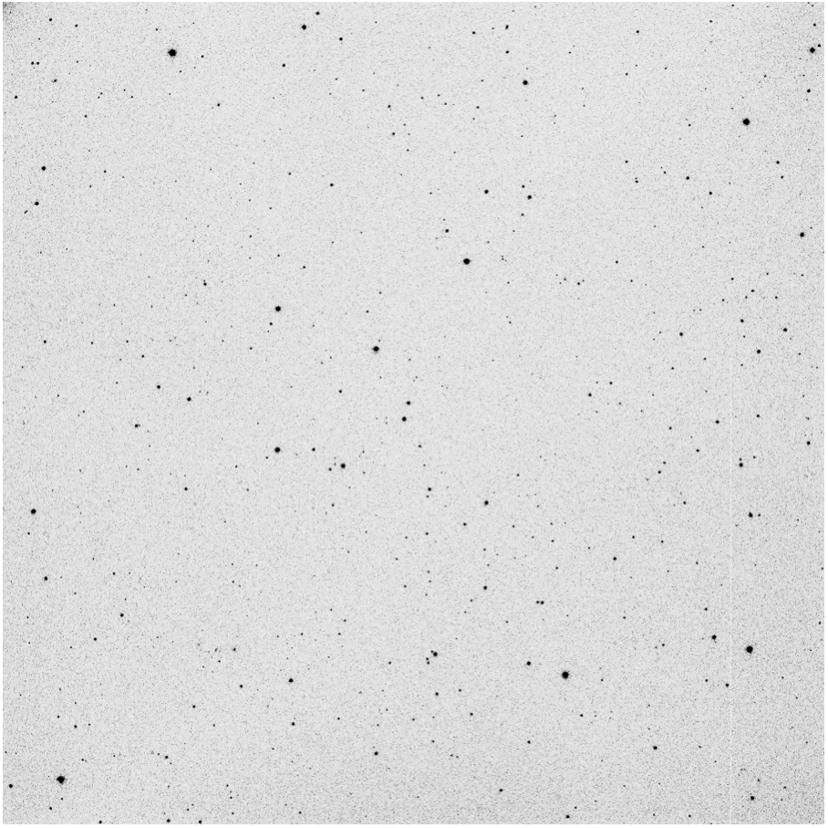
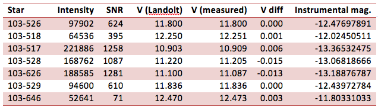
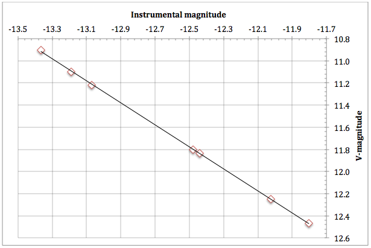

The following analysis investigates the accuracy of magnitude measurements using MaxIM DL's information tool in aperture mode, by plotting instrument magnitude against published magnitude for a Landolt field.
Two sets of measurements were made:
- Instrumental magnitude, based on an arbitrary zero point.
- V-band measurements of Landolt stars based on calibration of one of Landolt star in the field.
Image details
Date: 130610
Telescope: RC14C, 1.4 arc seconds per pixel.
Camera: Apogee Alta U16M (KAF-16803, ABG)
Air: 1.172
CCD Temp. -30
Altitude of field at image time 58°
Landolt field centred at RA 11 57 43.0 Dec -00 30 37.0
All images were acquired using a V band filter.
Exposures from 10s to 120s were taken in order to determine best star saturation for measurement. An average of 3 x 30s exposures were used for analysis.

Results
Instrumental magnitude was determined using the formula:
IM = -2.5log(ADU)
Where “ADU” = intensity value in MaxIM information dialogue.
(From the MaxIM DL documentation, intensity = sum of pixels within aperture – background.)
V magnitude was measured in MaxIM DL by calibrating Landolt star 103-256 to published V value, and then using the aperture to measure each of the other stars within MaxIM DL's information tool.


Conclusion
The results show very good correlation, considering it represents photometry using the information tool, rather than the more accurate photometry tool in MaxIM DL.
Magnitude measurements using MaxIM DL's aperture tool appear to be accurate to an average of 0.003 mag for the targests used in this exercise.